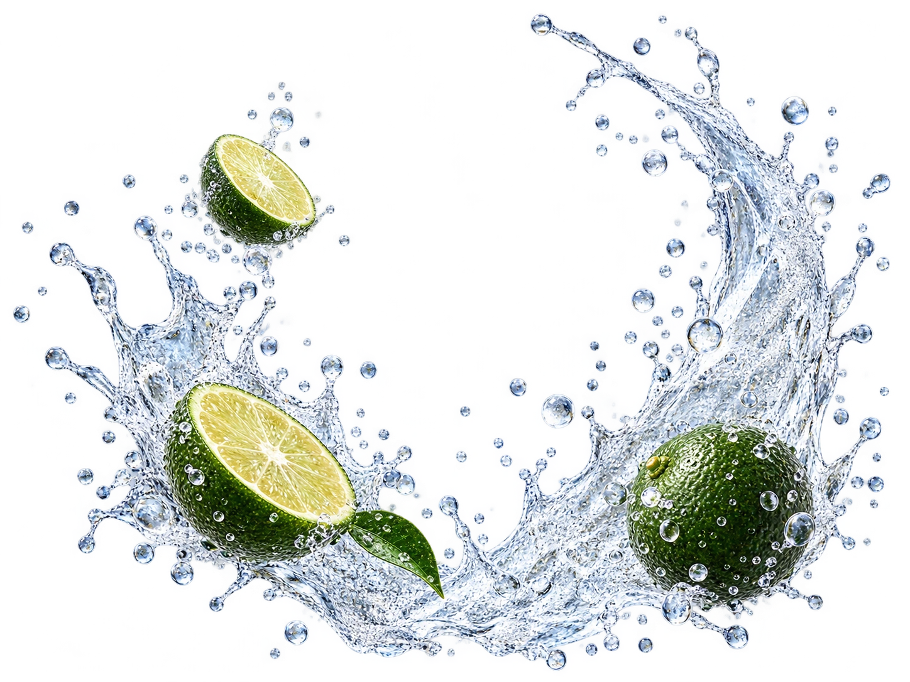
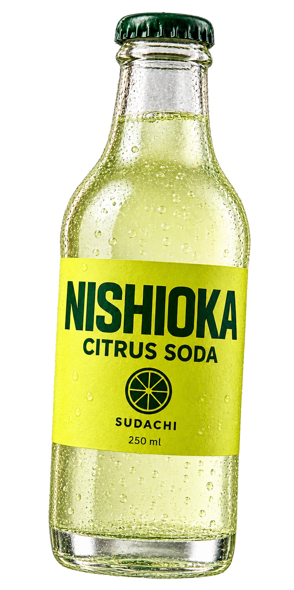

徳島の柑橘でつくる、クラフトソーダ。
すだち、しゅわっ！
皮の香りと、すっきりした酸味。
ひと口めから、すだちです。
香りも、はじける。


気になる味から、どうぞ。
すだち 01ゆず 02夏みかん 03
すだち味の試作今回、変えたところ
黄緑一色の画面から、冷たい青・白・柑橘の黄色を組み合わせた配色へ。ボトルと果実のまわりに、透明な飛沫と泡が弾ける瞬間を入れました。
初回に短く動き、「もう一度はじける」で再生できます。端末やブラウザの動きを減らす設定では静止します。味の切り替えと下のページは、まだ実装していません。
静止画と前後の比較を見る →自主制作の架空ブランドです。商品は販売していません。